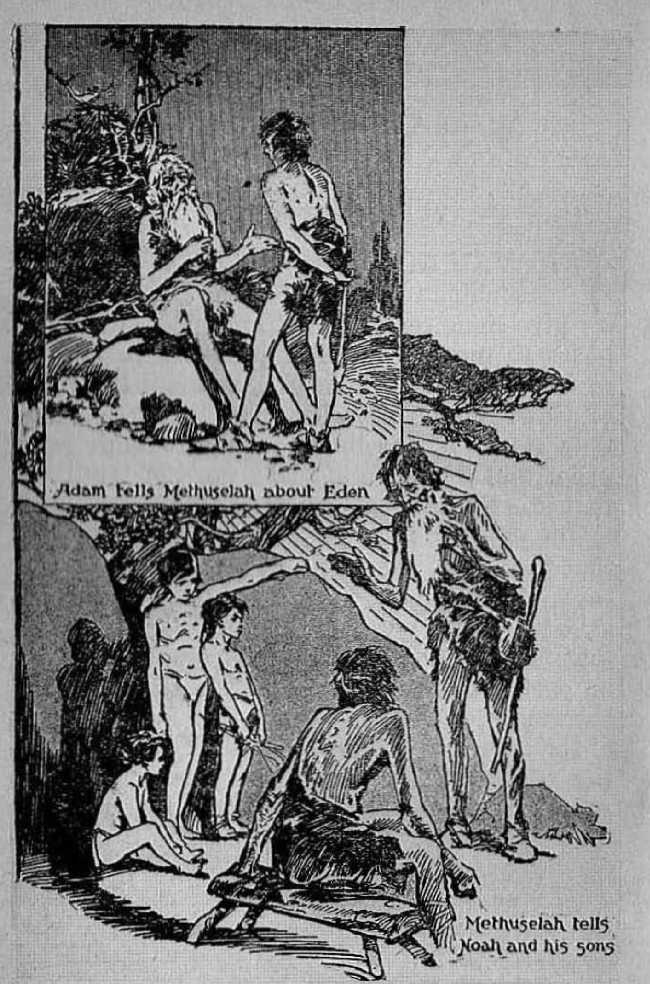

explained in Seven Bible Treatises by
J. F. RUTHERFORD
Page
3 The Bible
12 Jesus
10 The Church
23 The End of the World
35 Messengers of Peace
44 Christ’s Second Coming
53 Redemption of Man: Why Necessary
4—------------------------------(•
Judge Rutherford's writings are printed in 52 languages.
•i--<•
CoPYUIOnTED 1032 and Published by WATCH TOWER BIBLE AND TRACT SOCIETY International Bible Students Association Brooklyn, N. Y., U.S.A.
BiiANcn Offices: London, Magdeburg, Paris, Toronto, Strathfield, Capo Town, Berne, Copenhagen, Stockholm, and other cities.
Made ifl U.S. A.
JEHOVAH GOD is the Creator of man. It is reasonable to expect that the Creator would give some revelation of himself and his purposes to man. The Bible purports to be that revelation. Is the Bible true, and is it the Word of God? Modernist clergymen say “No,” and they say it is unreliable. I here submit some proof that the Bible is God’s word of truth and that it is the only safe guide for man.
The physical facts prove beyond any question that there was once a great flood of water that covered this earth. Noah was brought over and saved from the world that was destroyed by that flood. Noah was the most important man on earth of his time. He possessed a personal knowledge of things that no other man on earth at that time could know so well. From the creation of Adam to the flood was a period of 1G56 years. In those days men lived for nearly a thousand years. Adam was on earth three hundred years after the birth of Enoch. Being a good man, Enoch would gather from Adam all the facts he knew concerning Eden and what occurred there. Naturally Enoch would tell those things to his son Methuselah, who was 3
Handing Down the Record
Page 3
the grandfather of Noah. From Methuselah and from Lamech his father Noah would receive all the information then obtainable by man, the most important part of which would be that which took place in Eden and following thereafter. Noah lived 350 years after he came out of the ark. Only two years after his death Abraham was born, and naturally Abraham would learn from Shem, his great grandfather, who was the son of Noah, the history of man.
Abraham is the beginning of the people of Israel, otherwise called the Jews. He is designated the “father* of the faithful", and no man could have faith without knowledge; therefore the conclusion must be that Abraham was informed of God’s dealings with man. Jacob was a grandson of Abraham, and the father of Joseph who became a mighty ruler in Egypt. Moses, an Israelite, was born in Egypt, and it is written of him that he was learned in all the wisdom of Egypt, which naturally would include all the information handed down by his ancestors. It is not unusual for an American boy to learn from his father the important facts of American history. With stronger reasoning, Moses would learn from his father the history of his people. Moses was eminently qualified to write the history of man. Moses wrote the first five books of the Bible. It is therefore seen that this information could easily have been handed down from one generation to another.
Enoch, Noah, Abraham and Moses were men devoted to God and naturally would obtain all the information they could concerning God's dealings with mankind. The New Testament mentions these men as being approved by Jehovah. (f we had no other proof concerning the Bible except (radiiion, that would be sufficient proof io warrant us in accepting it as the history of the limnan race. We have much more than that, however.
It will be conceded that man is the most intelligent of earth’s creation. He has a natural tendency to keep a record of events for the bene-" fit of himself and succeeding generations. This in itself is proof that his Creator desired man to keep such record and hence planted in his mind the inclination so to do. It logically follows that the great Creator would provide the means for keeping such record. Since it had to do with his own word and name, he would supervise the keeping that it would be correct. If Jehovah had to do with the keeping of such record, then we may know that the record contains the tintli.
Both tradition and I he Bible agree that Moses was devoted to God and that he was sent to Egypt by Jehovah on a specific mission. He was the very kind of num that God would choose to make the record of his purposes concerning man. Moses, thel’efore, in writing was merely an amanuensis Lu write for Jehovah. The same is properly said of all the other writers of the Bible. God directed them what to write. Concerning such, David, the faithful king of Israel, said: “The spirit of the Lord spake by me, and his word was in my tongue.” The spirit of God means his power which is invisible to man but which he causes to operate upon the mind of man and to direct him what to do.
Men of old who were faithful to God and who wrote portions of the Bible are called prophets. Concerning those men it is written, in 2 Peter 1:21: “For the prophecy came not in old time by the will of man: but holy men of God spake as they were moved by the holy [spirit]." Those men wrote foretelling the coming of events which they did not understand and knew not about, which is proof that they were merely instruments in the hand of Jehovah, used by him to write such prophecy. The prophecies written centuries ago are now being fulfilled by the facts coming to pass and 'which are well known to all who think seriously. That is conclusive proof that no human mind could conceive or formulate the words of the prophets, but that they were dictated by Jehovah and that those men wrote as God's power moved upon their minds. Daniel, one of the prophets, asked God when these things would come to pass, and was told to close up the book of the prophecy and seal it until the time of the end, and then it would be understood.
No one will dispute the fact that Jesus lived and died in Palestine about 1900 years ago. What he said surpasses in wisdom the sayings of any other man ever on earth. He spoke with authority from Jehovah, and his words concerning the prophets were words of approval; and he quoted their words witii approval. Centuries before the birth of Jesus many of those prophets wrote concerning his birth, the course of action he would take, his persecution and his death and resurrection. The admitted facts concerning Jesus fully and completely support these prophecies and show that they were correct. This proves that no human mind formulated those prophecies, but that they proceeded from Jehovah God.
Jesus repeatedly stated that he is the Son of God and that he was sent by Jehovah from heaven to perform a work in the name of his Father and for the benefit of man. He was born a man that he might be a witness for God and speak the truth to men. His words recorded in John 18: 37 are these: “To this end was I born, and for this cause came I into the world, that I should boar witness unto the truth.” It was on that same day and shortly before his death that Jesus said concerning the Bible, God's record: “Thy word is truth.” To reject the Bible means we must reject Jesus as the Son of God and deny the truthfulness of his testimony. Anyone who believes Jesus was and is the great Teacher must believe the Bible is God’s word of truth. That part of the Bible called the New Testament was written by men who personally associated with Jesus and who learned of liim and who wrote under the power and direction of the spirit of God, and what they wrote is the truth.
The original manuscripts of the Bible were kept in the custody of God’s chosen people, the Israelites. The indisputable historical facts aside from the Bible show that from the time of Ezra forward there was a rewriting or copying of the original manuscripts, and that this work continued until the year 900 (A.D.). Three of these manuscripts are in existence this day. The Alexandrine manuscript is in the British Museum. The Sinaitic is in the library at Leningrad, and the Vatican manuscript is in the Vatican at Rome. There have been many versions and translations of these ancient manuscripts made by faithful men. It is from these that we have the Bible that we use today. Every attempt that has been made to destroy the Bible has failed, which is proof that God has preserved it for man’s benefit.
That the Bible is the true guide for man, it is written by one of the holy prophets, in Psalm 119:105: “Thy word is a lamp unto my feet, and a light unto my path.” God’s law to man is set forth in the Bible. To know and obey that law means to walk in the way of righteousness. In Psalm 19:7, 8 it is written: “The law of the
Lord is perfect, converting the soul; the testimony of the Lord is sure, making wise the simple : the statutes of the Lord are right, rejoicing the heart; the commandment of the Lord is pure, enlightening the eyes.’’
The devout student may come with confidence to the Scriptures, knowing that these set forth the will of God concerning man and are given to man for his instruction in righteousness. Upon the Scriptures he can confidently rely. The Bible constitutes the basis of his faith in God, and a knowledge thereof enables him to understand something of the great love of God toward the human family.
A full discussion of the origin and the authenticity of the Bible is found in the book Creation. The reason there is so much ignorance amongst the people concerning the Bible is that Satan the enemy of man and of God has interfered with the people’s understanding the truth. Satan through his agencies killed many of the men who faithfully performed their work in connection with the Bible, but not until their work was done. Thousands of copies of the Bible were destroyed by those same evil agencies, but Satan, with all his efforts, could not stop the progress of God’s unfolding purposes and the revelation of himself to the people through his Word. Being unable to stop the publication of the Bible, the Devil has sought through his representatives to corrupt the meaning thereof and to put into the minds of the people an improper understanding of its text. He has used every power at Iris command to turn the minds of the people away from Jehovah and from his pure Word of truth. For centuries many of these wonderful truths were obscure and taken away from the people. In God's due time these pure doctrines have been restored to the honest seekers after truth.
It is now God’s due time for the truth to be known, and nothing Satan can do or will do can prevent the truth from being known. The. time has come for the standard of Jehovah to be lifted up that the people may know which way to go. This standard is found in the Bible. Around this divine standard the righteous and truly honest-hearted will rally. The tide of truth is rising higher and higher and will continue so to rise until it has tilled the whole earth as the waters fill the deep. All this shall be to the glory of Jehovah God. The time has come for Jehovah to make known his name in the earth, and he will make this known through his Word and through the manifestation of his power. And be it noted that the truth does not belong to any man. It is God’s truth. God has used men or human instruments at different times for his own purposes and to his glory, but the truth has always been and always will be Jehovah’s. The Bible is his Word of truth, given to guide those who seek righteousness.
JEHOVAH'S BELOVED SON is called Jesus because God uses him to save the people. He has many other titles. The Scriptures many times speak of him as “The son of man". • Adam the perfect man was given dominion over the things of the earth, which he lost by reason of his disobedience to God’s law. Jesus, being the only other perfect man that has ever been on the earth, succeeded rightfully to all that Adam lost. Hence his title “The son of man”.
Another one of his titles is the Logos, or Word of God. That means that he is the spokesman for Jehovah. It is written in the Bible that the Logos was the beginning of God's creation. The prophet of God represents the Logos, Jesus, as using these words: “The Lord possessed me in the beginning of his way, before his works of old. I was set up from everlasting, from the beginning, or ever the earth was. When there were no depths, I was brought forth; when there were no fountains abounding with water. Before the mountains were settled, before the. hills was I brought forth: while as yet he had not made the earth, nor the fields, nor the highest part of the dust of the world. When he prepared the heavens, I was there: when he set a compass upon the face of the depth; when he 12
established the clouds above; when he strengthened the fountains of the deep; when he gave to the sea his decree, that the waters should not pass his commandment; when he appointed the foundations of the earth: then I was by him, as one brought up with him, and I was daily his delight, rejoicing always before him.”—Proverbs 8:22-30.
After he was brought forth God committed to the Logos the great privilege of creating all things. Concerning this it is written, in John 1:3: “All things were made by him; and without him was not any thing made that was made.” Also, “God . . . created all things by Jesus Christ.”—Ephesians 3:9.
From the time of the rebellion in Eden it was God’s purpose to redeem and recover man, and his word of promise was that he would do so by and through the seed that he would bring forth. No creature was wise enough to know how God could do this. Satan not only refused to believe it, but reproached God continuously for making the statement that he would do so. God’s law provides that nothing will redeem man from the sentence of death passed upon Adam except the voluntary death of another perfect man. Adam having been condemned to death, there was no perfect man in existence to accomplish the purpose of God as promised. All the offspring of Adam necessarily were imperfect. Satan, knowing this, continued to scoff at God's Word of promise that he would recover man. But that did not at all disturb the Almighty God. In his own due time Jehovah God sent his Son the Logos to earth. The life and the right to life of the Logos was transferred from spirit to human nature. At the moment of the birth of the man child Jesus the angels of heaven delivered to man this message: 'Behold, we bring to you good news of great joy, which shall be unto all people; for unto you is born this day, in the city of David, a Savior, who is Christ the Lord.’ (Luke 2:10,11) That was a promise from Jehovah which he is certain to faithfully keep.
When Jesus was thirty years of age not only was he physically a perfect man, but he was perfect under the law. He was the exact counterpart of the perfect man Adam before Adam had sinned. The judgment which God had entered against Adam took away the life and the right to life of that perfect man. That judgment indirectly affected all mankind thereafter born. If another perfect man could be found who would willingly suffer death in the place and stead of Adam, then Adam and his offspring would be released from the legal disability. Jesus was qualified and willing to do that very thing. When he reached his majority as a man, it is written of him that he said: T come, and I delight, 0 God, to do thy will/ (Psalm 40:7, 8) It was the expressed will of God that man should be redeemed from death and thereby saved, and to this end he sent Jesus into the world.
Bansom means to give a price corresponding to that which the law requires. Shortly after his baptism Jesus knew that he was to be the one to pay man's ransom price and that he would do so with his own lifeblood. Then he said, as appears in Matthew 20:28: “The Son of man came ... to give his life a ransom?’ That his death would provide the way to life for mankind he so said, in John 10:10: “I am come that they [the people] might have life, and that they might have it more abundantly.” Jesus stated in terms that he was doing this in full accord with and in obedience to his Father’s will.—John 10:17,18.
Adam was a deliberate wrongdoer and was justly sentenced to death. God was therefore under no obligation to redeem man. Why then did he do sol The answer is given in John 3:16,17: “For God so loved the world, that he gave his only begotten Son, that whosoever be-lieveth in him should not perish, but have everlasting life. For God sent not his Son into the world to condemn the world; but that the world through him might be saved.”
The beloved Son was the dearest treasure of the heart of Jehovah, and he unselfishly gave him in order that man, by believing and obeying, might live and not perish. The death and resurrection of Jesus from death provides the only possible means for the salvation of man, and 'there is no other name given under heaven, whereby man must be saved".—Acts 4:12.
Be it noted that the death of Jesus results beneficially only to those that believe. No man can believe without knowledge, and therefore it is of vital importance that man have a knowledge of the truth. In 1 Timothy 2: 3-6 it is written: “For this is good and acceptable in the sight of God our Saviour; who will have all men to be saved, and to come unto the knowledge of the truth. For there is one God, and one mediator between God and men, the man Christ Jesus; who gave himself a ransom for all, to be testified in due time.”
Jesus Christ is another title given to the beloved Son of God. "Christ” means the Anointed One; and therefore in substance God says: ‘This is my duly constituted official representative.’ He is made the King of God’s kingdom to be established. Another of his titles is "The King of kings”. God promised him the kingdom and anointed him as King while he was yet on the earth.
In order for mankind to learn of God’s purpose to redeem the race and to establish his kingdom which would vindicate his own word and name, it was necessary for a testimony of this truth to be given. Jesus is the'great witness by whom such testimony is given. He was brought before the Roman governor at the complaint of the hypocritical clergy and charged with the offense of sedition. Pilate said to him: “Art thou a king?” In response to this Jesus said: “Thou sayest that I am a king. To this end was I born, and for this cause came I into the world, that I should bear witness unto the truth. Every one that is of the truth heareth my voice”—John 18: 37.
When Jesus was on earth he was faithful and true in giving testimony to the truth. Another title which God gave him is “The faithful and true witness”. Truth brings light to those who receive it. Jesus was the light of the world because he held forth the light of truth of and concerning God. At all times Jesus magnified the Word and name of God, and he laid stress upon the fact that the truth is necessary for man’s welfare. In his memorable prayer concerning his disciples he said: “Sanctify them through thy truth, thy word is truth.”—John 17:17.
When Jesus was about to be crucified he committed to his disciples the obligation of bearing witness to the truth. Since then every man who has been and is a true follower of Christ Jesus must be a witness to the truth. Satan has wrongfully induced many to believe that their duty is to convert the world and bring men into the churches. No man, however, is commissioned to convert the world. God's purpose is to have the gospel preached only as a witness to the nations until the end of Satan’s reign, and then Christ by and through his kingdom will deliver the people and convert the world to righteousness.
Just before his crucifixion Jesus stated to his disciples that he was going away to heaven and would prepare a place for his followers, and that in due time he would come and receive them unto himself that they might be with him. That place is the kingdom of God which shall rule the world. Christ Jesus is the great King and Head of that kingdom. God has provided that there shall be others associated with Jesus Christ in that kingdom, and these must be the true followers of Christ Jesus and faithful and true witnesses to the name of Jehovah.
During the absence of Jesus in heaven there have been some faithful and true men and women who have been witnesses to the Word and name of God. They have told the people concerning his kingdom. Some will continue to be such faithful and true witnesses until the kingdom is in full control of the affairs of the earth. Then all shall learn the truth.
Now we are in the last days of Satan’s rule. Christ Jesus has prepared the place in God’s universal organization for his faithful followers. Now he has taken his power as the great King, and for this reason the world is now in the period of transition from Satan’s rule to the rule of Christ. Already Satan has been cast out of heaven, The forces of wickedness and of righteousness are gathering for the great and final conflict on the earth, in which Christ will be victorious. Then shall follow the glorious reign of Christ as the invisible ruler of the world.
In this day of great crisis God’s commandment is that the faithful followers of Jesus Christ must be his witnesses and tell the people that Jehovah is God and that the day of his kingdom is at hand. In obedience to this commandment men and women call at the homes of the people and exhibit to them books which fully explain the Bible. These books enable, the people to see and understand the truth. The purpose is not to get the people to join something, but to enable them to learn God’s provision for their deliverance and life. The people must now be told that Jehovah is the true God, that Christ Jesus is the Redeemer and Savior of man, and that the kingdom of God is at the door. Let the people hear and be glad.
FOR MANY CENTURIES there has been a great controversy among men as to whether the Catholic or Protestant organizations constitute the true church. No good could result to anyone by engaging in that controversy now. The truth is that which is needed to satisfy the mind. Jesus is authority for the statement that the Bible, which is God’s Word, is the truth. The Bible makes the plain statement concerning the. church, and all who believe the Bible will be satisfied with its testimony.
The word church literally means “a calling out". A company of people taken out from a larger body and set aside for a specific purpose may properly be defined as a church. The term is often applied to a body of people, which people may have no relationship whatsoever to the true church. Many organizations of men have been formed and which organizations are called by the name of 'church’, but none of which form any part of the true church. No man has authority to determine what is the church and who are the members. That must be determined by the Word of God.
The true church is composed of Christ Jesus and all others who are made like him. Jehovah God selects the church, and therefore the true church is designated the church of God. The language employed in 1 Timothy 3:15 is, “The church of the living God.” In Hebrews 12: 23 the same company is designated the “church of the firstborn, which are written in heaven”. The true church, therefore, means the people of God taken out from amongst humanity and set aside for his purposes.
The rule followed in the Catholic and in the Protestant organizations, which are called churches, is for the clergyman to perform a ceremony and cause the name of the candidate to be entered upon the records of the organization, and then it is said that he is a part of the church. That, however, has nothing whatsoever to do with God’s church and is not God's method of selecting the church. The fact that one has his name enrolled upon the books of the Catholic or the Protestant organization does not at all signify that he is a part of the church of God. Men have made rules relative to the Catholic and Protestant organizations. God has made the rules concerning his church.
In the twelfth chapter of First Corinthians it is written that ‘God sets the members in the body [of the church] as it pleaseth him". Jesus Christ is the Chief One of the church of God. In Colossians 1:18,19 it is written concerning Jesus: ‘Tie. is the head of the body, the church: who is the beginning, the firstborn from the dead; that in all things he might have the preeminence. For it pleased the Father that in him should all fulness dwell.” In Ephesians 1:22, 23 God caused to be written concerning his beloved Son: "And hath put all things under his feet, and gave him to be the head over all things to the church, which is his body, the fulness of him that filleth all in all."" These scriptures prove beyond any doubt that God selects the church, sets the members in the body as it pleaseth him, records the names thereof in his book in heaven, bnt not on some book on the earth, and that Jesus Christ is the Head or Chief One of the church.
The clergy of today tell the people that it matters little to which church organization one belongs, that all are traveling different roads, but to one and the same goal, and if each one is true to his church organization he will reach heaven when he dies. Such claim is very misleading and wholly false. Seeing from the Scriptures that the church is the body of Christ, it would be inconsistent to select the members thereof under different rules by different methods and have them travel many different roads. Long before the beginning of the selection of the church God foreknew and determined to select the church in his own good way. In Romans 8: 28, 29 it is written that those who compose the members of the church of God he has called and selected according to his purposes: “Because those whom he foreknew, he also predetermined to be copies of the likeness of his Son, for him to be a firstborn among many brethren ” ( Diaglott') This conclusively proves that the members must be selected all in the same manner, and in the way that Jesus was selected, and must follow the same course that he took and do as he did. In further support of this statement it is written, in 1 Peter 2:21: “For even hereunto, were ye called: because
Christ also suffered for us, leaving us an example, that ye should follow his steps.”
When Jesus reached his majority as a man, he presented himself to Jehovah God, declaring his purpose to do the will of God. Jehovah God caused the man John to be a witness to the selection of Jesus; and heuce it is written, in Matthew 3:17, that John heard these words spoken: “This is my beloved Son, in whom I am well pleased.” That took place at the time of the baptism of Jesus in the Jordan. Thus Jesus was brought forth and acknowledged by Jehovah as his Son, and that means the begetting. The baptism of Jesus in water was a symbol that he had agreed to do Jehovah’s will. After Jesus had applied himself to gaining understanding of God’s purposes from his Word, then God made a covenant with Jesus to be the King and Head over the church. God had determined that Jesus should have associated with him men who would follow in his steps, and those so selected are called the body of Christ which is his church. The selection of these body members began at Pentecost, and concerning such it is written, in Acts 2: 47: “And the Lord added to the church daily.” Man did not do the adding then or since. God used the disciples of Jesus Christ to preach the truth to the people and tell them of God’s way, but the Lord himself selected the members of the church.
The Catholic and Protestant organizations, called the church, mix up with the politics of the world and count themselves a part of the world, which they really are. Jesus refused to do anything of that kind, because he said ‘Satan is the god of this world*, and he told his followers they must likewise separate themselves from the world. This is further proof that the Catholic and Protestant organizations are no part of God’s organization. The clergy claim that the members of the church are being selected so that they can escape torment and at death find a home in heaven. That statement is wholly untrue. Members of the church while on earth have a duty to perform, and that has nothing to do with their escaping torment. One of the obligations laid upon the members of God’s church is that they must be his witnesses and faithfully represent him and speak his truth. In Acts 15:14 it is written that God has favored men and taken out from them a people for his name. Every one who becomes a member of the true church, and proves faithful, must be a witness to the Word and name of Jehovah God. Without so doing they could not be a people for God’s name. The Scriptures especially emphasize the fact that the members of the church on earth today must be God’s witnesses.
During the period that followed the begetting of Jesus he devoted himself wholly to the work of bearing testimony as a witness to the Word and name of Jehovah God. Those who follow in his footsteps and who become members of his church must do likewise. When before Pilate Jesus said (John 18:37): “To this end was I born, and for this cause came I into the world, that I should bear witness unto the truth.” Then he added that every one. of his true followers must do the same thing.
One becomes a member of the true church in this manner, to wit: He learns that Jehovah is God and that Christ Jesus is the Redeemer of mankind, and that this is the only way for salvation of man. He believing this, Jesus now says to him: ‘If you will be my follower, you must deny yourself and take up your cross and follow me.’ That means that the man must agree to be governed, not by his own selfish will or desires, but by the will of God. By this means one is brought into the covenant with God, and God brings him forth as his child or son. Thus he is taken out from amongst men and set aside for God’s purposes, that he may be a witness to the Word and name of Jehovah. In no other way could one follow in the footsteps of Jesus Christ.
Jesus, the Head of the church, suffered much persecution from the clergy of his day. Although those men claimed to be representatives of God they persecuted Jesus unto death. The reason was that Jesus was faithful to God and gave testimony of and concerning the truth. The clergy of that day were a part of the world, just as the clergy of the present time are a part of the world. Jesus told his followers that if they were faithful in doing their duty, they too would suffer persecution at the hands of the same class of men, because as the servants of God they must be like their Master, Christ Jesus.
Today there is a small company of men and women who are going about from place to place with Bibles and books explaining the Bible and which contain the message of God's purposes. These books they exhibit to the people, and tell them about God’s provision for the relief and blessing of mankind. The clergy violently oppose this little company of witnesses, because they are telling the truth of and concerning God's purposes. Satan the Devil is the chief opponent of Christ and his followers and he uses the clergy of the organizations of the world called the Catholic and Protestant churches to persecute those who are humbly doing God’s will. The true Christian is to expect such opposition, because Jesus said thus must the true members of the church suffer reproach because of faithfulness unto God. Jesus furthermore said that if anyone gives one of these faithful witnesses a cup of cold water in his name, he shall receive the favor of the Lord. It is therefore the privilege of the people to be kind and considerate to those who arc carrying the message of the truth to them. Those who willingly persecute the followers of Christ will be greatly punished by the Lord in due time, while those who are kind to these humble and faithful members of the true church will be greatly blessed by the Lord in his due time.
There are millions of people on the earth today who have been led to believe that because they are members of an earthly organization called the church they are going to heaven. The clergy are the ones who have misled them. Such have not even started on the way to heaven. The true church will be in heavenly glory with Christ Jesus the Head thereof, and every one who is there must first prove himself faithful unto God and unto Christ. Therefore it is written, in Revelation 2:101 “Be thou faithful unto death, and I will give thee a crown of life.” In Revelation, chapter 7, it is written that there will be only 144,000 members of the true church. When the work of giving the testimony to the name of Jehovah in the present world is completed, then the faithful ones shall be for ever received into heaven with Christ Jesus. The entire church, Head and body, will then be used by Jehovah as the instrument to bring blessings to all the families of the earth. Then all who hear and obey the word of God, ‘as Christ and his body members will bring it to them in God's appointed way, will be restored as perfect creatures and will continue to live on the earth for ever.
THE BIBLE makes it clear that the end of the world is a time of joy to those who love and serve God. The people in general have been induced to believe that the end of the world means the beginning of terrible suffering which shall continue forever. The clergy are responsible for this false, conception. It is the truth that makes men free from bondage and brings peace of mind, and the truth of God’s purpose is found only in the Bible.
The world means the peoples of earth organized into forms of government and which is carried on under the supervision of an invisible overlord. Every honest person freely admits that today there is no government on earth that is satisfactory. The people are ruled by a few selfish men. Those men control the finance of the world, they make and enforce the laws to favor a few selfish interests, and they induce the people to believe that it is the will of God that all conform themselves to the present ruling powers. The visible part of the world is made up of Big Business, professional politicians, and professional religionists, called clergymen. Under the present form of government the people, suffer much injustice and are greatly oppressed. Their taxes are high, while the products of their 28
labor are low in price. The men who by hard labor produce the wealth of the land receive comparatively little benefit therefrom. Those who do no work but who busy themselves with selfish schemes enjoy the fruits of the other man’s labor. A few live in luxury while many suffer, even for necessities. The people are always seeking a change for better, but find it not. The facts are that a great change from an extremely selfish government to one that is wholly unselfish and righteous is just at hand. Every honest person, therefore, should have the keenest interest in learning the facts concerning the present and the future.
For many centuries Satan has been the invisible overlord of the organised peoples of earth. The people have organized themselves into governments, but, being imperfect and moved by selfishness and ruled by imperfect men, they have easily fallen under the wicked influence of Satan. The great mass of mankind is ignorant of God and his purposes. God has caused the truth of his purposes to be told by his witnesses, and those who have had the hearing ear and been willing to learn, and who have faithfully endeavored to do God’s will, have been blessed. It is the influence of Satan subtly exercised that has blinded the masses of the people to the truth. Satan has used the visible part of his organization as an instrument to keep the people in ignorance.
God made promise that in his due time he would bring forth a kingdom or government which shall rule in righteousness, and that Christ Jesus will be the invisible Ruler and Head of that righteous government. It follows, then, that before, the people can be released from oppression and enjoy peace and live, Satan must be completely ousted and Christ fully installed as the invisible ruler of the world. That great change is spoken of in the Bible as the “end of the world'5, meaning the end of Satan’s reign and the beginning of the reign of Christ.
The disciples had learned from Jesus of such coming kingdom at Iris second appearing, and hence they propounded to him this question; ‘Tell us, what shall be the proof of thy coming and the end of the world?’ In answering their question Jesus spoke a great prophecy, which must have its fulfilment in due time. Among other tilings he said that the end of the world will be marked by a great world war, in which nations and kingdoms shall rise against each other; that then there would follow famines and pestilences and many earthquakes, and there would be great suffering on the earth; and then there would be much distress and perplexity, and men’s hearts would fail them for fear.
When we see evidences, produced by events coming to pass that exactly fit a prophecy, we may be sure that such constitute a fulfilment of
the prophecy. In 1914 this great prophecy of Jesus began to have its fulfilment with the coming of the World War. Quickly the war was followed by famine, pestilence and much distress, as he foretold. Today all the nations are in distress and perplexity. The end of the world has come.
Prior to 1914 God had not interfered with the rule of Satan, but permitted him to go the limit in his course of wickedness. According to the prophecy and the facts 1914 marked the end of that period of time of non-interference by the Lord. At that time, as stated in Psalm 2:6, God placed his King Christ upon his throne, and he there began action. His first great act was to cast Satan out of heaven. The 110th Psalm and the 1.2th chapter of Revelation state how this w^ done. The Scriptural proof concerning Satan's organization and God’s organization, and the casting of Satan out of heaven, and what shall follow, is set forth in detail in the book called Deliverance. Every person who desires to know what the Bible says concerning the end of the world should read that book.
During the World War the slogan that was heard around the earth was “The war will make the world safe for democracy”. Democracy means a government that is operated for the benefit of the people. Everyone knows that the democracy of the world is in greater peril today than it has been heretofore. Revelation 12:12 states the reason for this distress in this language : “Woe to the inhabiters of the earth, and of the sea! for the devil is come down unto you, having great wrath, because he knoweth that he hath but a short time.” Since Satan was cast out of heaven and down to the earth he con-lines his operations to the earth, and conditions of the people grow worse. Satan's purpose is to induce the people to believe that God is responsible for all their ills and sufferings, and to cause them to turn away from God and to curse him and to reproach his holy name. Such condition will continue until the great battle of God Almighty, called in the Bible the “battle of Armageddon”. In that great battle Satan and his organization will be cleared off the earth. This is necessary in order to make way for the righteous government of Christ that shall rule and bless the people.
The end of the world does not mean the end of the earth, because the earth abides forever. It refers to the end of Satan’s rule and the beginning of the rule of Christ, the King of righteousness. Because Christ has come and begun to exercise his righteous power, and because the wicked world has reached its end, it is a time for all those who love righteousness to rejoice. This is good news to all who have a desire to see a change for the good of mankind. In answering the question propounded to him by the disciples, and after he had told them of the events that would mark the end of the world, Jesus gave to them the commandment set forth in Matthew 24:14: “This gospel of the kingdom shall be preached in all the world for a witness unto all nations; and then shall the end come?’ The word “gospel” means “good news”, and these facts constitute good news to all who desire to see the people in peace and happiness.
Every one who is truly devoted to God willingly obeys his commandments. No one could obey his commandments now without being a witness to the Word and name of God and telling the people about his kingdom. You may wonder why there are men and women going from house to house with books explaining the Bible. You observe that they are not doing so to obtain money, because they hand over the books often for less than the cost of manufacture and delivery. Even the money received is used to make other books. What, then, is the reason? The reason is they are doing this in obedience to the Lord’s commandments. They know that the world has ended and Christ has come, and the kingdom of God is being established, and gladly they obey the commandments of the. Lord to preach this good news to the people. They know that the governments of the earth can bring no relief to the people. They know that God’s kingdom will bring complete relief to all suffering humanity, and therefore they delight to serve the people with this message of truth and consolation.
God is the great Spirit, and his beloved Son is the express image of his Father. The church, which is the body of Christ, is also the bride of Christ, and those on earth who are faithfully following the Master constitute a part thereof. The time has therefore come for the great prophecy recorded in Revelation 22:17 to be fulfilled, which prophecy states: “And the Spirit and the bride say, Come. And let him that heareth say, Come. And let him that is athirst come: and whosoever will, let him take the water of life freely.”
It is the duty and obligation laid upon every true follower of Christ now to tell the. truth to the people and invite them to partake of this refreshing message. It is the privilege of every one wlio hears these wonderful truths to tell them to others. Hence the Spirit and the bride say, Come, and those that hear say, Come and learn the truth. This is not for the purpose of forming an organization of men, but is done in order that the people may learn that the old world has ended and that their sufferings soon will end and that complete relief and blessings will come to them through the administration of the new world under Christ.
Satan knows that his world has ended and that his time is short, because it is so stated in the Scriptures. He knows that those who are devoted to God are the ones who now tell the people the truth. For this reason Satan makes war upon these faithful witnesses of the Lord, which fact the Lord foretold in Revelation 12:17. Let no one, therefore, be discouraged because of opposition to the message of truth. All who love God and righteousness should gird up their minds and renew their zeal and continue joyfully to battle for the right. The old world has ended and the day of deliverance is at hand. God’s kingdom long ago promised has come, and in keeping with his promise his kingdom shall bring blessings to all the families of the earth. Let the people now study to know God and his Christ and learn the way to everlasting life in happiness.
THE MASS of.the people of every nation desire peace. Only a small minority desire war at any time. When a controversy arises between nations, the common people are never requested to vote upon the question of war or peace. The few who control and who are designated "the ruling class” determine the question and then call upon the common people to do the fighting. War results financially to the benefit of only a very few. It brings great loss to the common people, and many are sent to untimely graves and these leave behind a multitude of broken hearts.
When the World War came to a close in 1918, it had worked great havoc upon the nations and peoples. That result induced many to try to bring about a lasting peace on earth. To this end many plans have been submitted, and yet there is no peace. The nations are in distress and in perplexity, and the rulers fear that which they sense is about to come to pass. Before anyone can arrive at a just conclusion as to the proper remedy for the prevention of war, the power that is really the cause for the war must be ascertained and then the means found to cause that power to cease to function. Who, then, is the primary, moving cause of wars?
The Bible answers that question clearly. War results in the destruction of human life. The taking of human Efe is murder. God made human Efe sacred. Every time a rainbow appears in the sky, that is a silent wutness eloquently speaking to the people that human life is a sacred thing. When Noah was delivered from the ark, God made a covenant with him and declared that he set the rainbow in the sky as a symbol of the sacredness of human life, and in that covenant he defines the taking of human life as murder. It was Satan the Devil who induced the murder of Abel by his brother Cain.
Satan led the human race into crime and death. It is Satan who planted hatred in the hearts of men and caused countless numbers of human lives to be wrongfully taken. Satan has induced many wars and has then caused Jehovah God to be charged with the terrible results thereof, and this in order that the people might turn away from Jehovah God. When Jesus was on earth he declared that Satan is a murderer from the beginning. Satan the Devil is the god of this evil world, and the ruling powei* thereof pthough invisible to man, and he controls the nations, whether they realize that fact or not. When one nation rushes into war against another nation, the inducing cause is the subtle influence of Satan exercised upon the visible ruling powers.
In 1914 practically the whole world was divided into two war camps. The financial and political power of the various nations of “Christendom” determined that there must be a war. It was so declared, and then millions of the common people were marched to the battlefield and caused to engage in bitter conflict without knowing the real reason why. In each country involved in the war were many clergymen, all of whom claimed to be representatives of God on earth, and almost all of them supported the war on their respective sides. These clergymen 'sanctified’ that war and 'blessed’ the armies that opposed each other. The Scriptures plainly state that the organized world powers constituted the visible part of Satan’s organization. The clergy, by taking sides and urging the people into war, willingly and deliberately made themselves a part of Satan’s organization. It is now plain to all that those who sanctified and advocated war were cooperating with Satan. A greater responsibility rests upon the clergymen, because they claim to be representatives of God and Christ, who commanded: “Thou shalt not lull.” It is the clergy class that wear skirts and other garments to identify themselves as clergymen. Concerning their activities in wars God foreknew and foretold through his prophet his disapproval of them in these words (Jeremiah 2: 34): “In thy skirts is found the blood of the souls of the poor innocents; I have not found it by secret search, but upon all these.”
Peace means a state of tranquillity and freedom from strife. When righteousness is in full control, then peace will exist on earth and will continue forever. Jehovah is the God of peace. His anger is expressed only against unrighteousness or wickedness. In his own due time he will destroy the wicked that peace and righteousness may continue. In the beginning man had peace with God. He lost that peace by reason of sin, and it was Satan who induced the committing of that sin. Since that time men have been seeking a way for peace, happiness and life.
Nineteen centuries ago Jesus was born at Bethlehem. He is the Son of God, sent to earth to represent Jehovah and to redeem the human race from sin and the evil effects thereof. At the time of his birth as a man the angel of God delivered this message: “Glory to God in the highest, on earth peace, good will toward men.” This means that peace to the world can come only in God’s appointed way, and that appointed way is by and through the administration of the government by his beloved Son.
Jehovah God has appointed and anointed Christ Jesus as the King and ruler of righteousness. In the Hebrew language “Christ” means the Messiah, which is the Anointed One of God. For many centuries the hopes of the Jewish people rested on the Messiah, and when Jesus came that people would have accepted him, had it not been for the clergy of that day. Now almost all Jews have lost their faith in God and in his Word. They must have an opportunity to know the truth. When Jesus was about to take his departure from earth he said to his faithful disciples: T go away to prepare a place for you, and I will come again for you and receive you to myself.’ He told them that God had appointed to him the kingdom and this kingdom he would establish upon his return in God’s due time. Since then the Christians have looked forward to the kingdom of God under Christ as the means of bringing lasting peace to the peoples of earth. Therefore it must be apparent to all who believe the Bible that when the time arrives for God to place his King in power, and for the beginning of the operation of that kingdom, he would have some one make a proclamation of these truths to the people. This he would do in order that the people might be informed.
Messengers are those who bear messages for others and to others. The messengers of God are those who faithfully bear God’s message to those who God desires shall have an opportunity to receive the message. The message that comes from God necessarily show’s forth his honor and the praise of his name. It is written in 1 Peter 2:9 and 10 that God has selected the followers of Christ Jesus to be his messengers and to deliver his message that shall show forth the praises of Jehovah God. It follows, then, that the faithful messengers must tell the people who is the true God. To these messengers Jehovah says, in Isaiah 43:10: £Ye are my witnesses, and my servants, whom I have chosen; therefore ye are my witnesses that I am God? These must go then and inform the people. If the facts that have come to the attention of the people show that there are those amongst us who fulfil this great prophecy of Jehovah, then the people will do well to hear and heed the message that these messengers bring to them.
How may we know who are the messengers of God and therefore the messengers of peace?
In Matthew 7:16 Jesus answers that question: “Ye shall know them by their fruits.” That is to say, these messengers will be properly identified by the fruits which they bring. Furthermore Jesus said, in Matthew 21:43, that God's messengers must bring forth the fruits of the kingdom. Such, then, are the fruits by which they are identified. These fruits are not the fruits of any man, but they are God's fruits. Fruits are life-sustaining and life-giving. The fruits of the kingdom, therefore, are God’s lifegiving and life-sustaining message of truth that is found in his Word. These fruits constitute God’s true and complete remedy for the ills of humankind, and a knowledge thereof brings peace to the people. Those who bear these fruits are hence properly called “messengers of peace”.
When a company of men come to the people with a peace treaty formulated and executed by men, we may know that such are bearing the fruits of men and not the fruits of God's kingdom; and these should be rejected. When a scheme, such as the League of Nations, is offered to solve the perplexing questions that confront the nations and peoples, you may know that such scheme proceeds not from Jehovah God and that therefore those who endorse such scheme and present it to the people are not the representatives of God. This is true, whether the clergymen know it or not. The clergymen of America support the League of Nations, which is proof that they are not messengers of God.
There is a company of men and women going from place to place throughout the land hearing to the people the message of God’s life-giving and life-sustaining truth, and by their fruit which they bear you may identify them as messengers of the Lord and hence messengers of peace. They come to you, not to accomplish a selfish end, but to aid you to gain the much-needed knowledge concerning God’s purpose of blessing the human family. Briefly summed up the message they bring you is this:
That Jehovah is the only true God and that there is none besides him; that Christ Jesus is the Redeemer of mankind and is God's duly appointed and anointed King; that the time has come for the reign of Christ to begin, and therefore the time for the people to hear and learn the truth; that although the peoples of earth are now in great distress the day of deliverance is at hand by and through the kingdom of God; and that this is the only way lasting peace can ever be established. The great prophecy written in Isaiah 9:6,7 is now in course of fulfilment, and it says: ‘Unto us a King is given, and the government shall be upon his shoulder; and his name shall be called Wonderful Counselor, the Mighty God, the Everlasting Father, the Life-giver to the people, and the Prince of Peace. Of his government and peace there shall be no end? God has placed his King upon his throne; and now he will have everlasting peace established on earth; and to accomplish this he first proceeds to destroy Satan's wicked organization; hence the great trouble that is just ahead, which will be brief, and will be the last.
It is to be expected that Satan would oppose the delivery of this great message of truth to the people. God has plainly set forth in his Word that Satan will oppose. In Revelation 12:17 it is written that Satan goes forth to make war against these faithful witnesses or messengers of God, because to them has been committed the testimony of Jesus Christ; and because these obey the commandments of the Lord in delivering this testimony, Satan seeks their destruction. That explains the reason why there is such violent opposition manifested by the leaders in the church denominations against these messengers of peace. However, Satan cannot succeed in his war against them, for the reason that Jehovah God says to his messengers, in Isaiah 51:16: “I have put my words in thy mouth, and I have covered thee in the shadow of mine hand, that I may plant the heavens, and lay the foundations of the earth, and say unto Zion, Thou art my people.”
JEHOVAH’S great Executive Officer and earth’s rightful King is Christ. For this reason all persons should desire to know about him and his work. History and the Bible agree that approximately A.D. 1 a child was born at Bethlehem; that when be reached thirty years of age he began his public ministry; that he was bitterly opposed by the clergy of that day; that lie taught his disciples and the people for three and one-half years; that he was unjustly charged and wrongfully convicted of sedition and was crucified; and that the name of this celebrated one is Christ Jesus. In brief that is the history of his first coming. A few hours before his death he said to his close friends: “I go [away] to prepare a place for you. And if I go ... I will come again, and receive you unto myself.” This testimony of his second coming is abundantly supported by many other texts of the Bible.
Jesus Christ died as a man and was raised fi;om the dead a glorious divine creature. It is written, in Hebrews one, verse three, that he is the express image of God; and since God is divine and no one can see him, neither can any human eye see Jesus Christ, but all mankind in due time shall discern that he is come, and this they will know by reason of the evidence of 44
events coming to pass and appearing to them. To his disciples he said, as is recorded in John 14:28: “I go away, and come again unto you.” This and other texts prove he must come the second time. The fact of his ascension into heaven is recorded in Acts 1: 9-11, at which time the angel of Jehovah announced to his disciples who stood by: "This same Jesus, which is taken up from you into heaven, shall so come in like manner as ye have seen him go into heaven.” The divine record further states that Jehovah God exalted Christ Jesus above all creation and made him preeminent over all and clothed him with all power and authority to carry into action all of Jehovah’s purposes. Into his hands God has committed the supreme power both in heaven and in earth.
The purpose of the second coming of Christ, when miderstood, enables one to see and understand the evidences relating to the time of his coming and which prove his presence. The primary purpose of the entire work of Christ is the vindication of the word and name of Jehovah God, and which will result beneficially to all creatures that love righteousness. Many have thought that the sole purpose of the second coming of Christ is to take men to heaven, but such is not the correct thought.
The first coming of Christ Jesus was to provide redemption of man from death, and this he did by permitting himself to be put to death as the sinners substitute. At his second coming he does receive a limited number into heaven. All this, however, is incidental to the great work of vindicating Jehovah's name, which work he will fully accomplish. The vindication of Jehovah God’s name will bring no personal benefit to him, but it will prove to all creation that Jehovah alone is the source of life and that those who live everlastingly must know, love and obey him. These facts Jesus Christ will fully demonstrate.
Why is it necessary to vindicate the word and name of Jehovah God? The reason is this: God announced his purpose to create man in his own image and likeness. This he did, and gave man life upon condition of continuous obedience. Satan, man’s overlord, became a traitor to God and turned man away from God and into death. Satan then declared that God could not put a man on earth who could successfully resist Satan’s power and remain faithful and true to God. This challenge put the name and word of God in dispute or in issue. God accepted Satan’s challenge, and has let him proceed to do his worst in wickedness and this Satan has done over a long period of time. At the same time God gave his word that he would raise up a mighty One who in time would prove God’s word and name are true and who would be the channel of blessings for all the peoples of earth if they would believe and obey him. He gave his word that this mighty One should redeem man from the condemnation resulting from sin and that this mighty Redeemer and Deliverer would be made King of the world and would set up his kingdom, and that ‘“'unto him shall the gathering of the people be". God promised that during the reign of Christ all the obedient ones of the human race shall be restored to perfect manhood. When Jesus Christ has accomplished this great work, such will he a complete vindication of the word and name of Jehovah God and definitely prove to all creation that eternal life and happiness are dependent upon Jehovah.
When Jesus Christ ascended into heaven doubtless he was eager to proceed with the great work of vindicating his Father’s name. In Psalm 110 it is recorded that Jehovah said to Christ: “Sit thou at my right hand, until I make thine enemies thy footstool." Christ must be obedient to Jehovah and therefore await God's due time for him to act. How long must • he wait before beginning the work of destroying Satan’s wicked organization? The Scriptures show that he must wait until the end of the Gentile times, which times began in 606 B.C., extended over a period of 2,520 years, and-came to an end in the autumn of 1914. That was the period of time in which Jehovah permitted Satan to carry on his wicked work without interference, At the end of that period of time Jesus Christ, in obedience to his Father’s will, began the great work of ousting Satan and establish-
r ji iw.
ing Ills kingdom. The year 1914, therefore, marks the second coming of Christ.
That day has passed and no one has seen Christ Jesus on earth, and this may be taken as an argument against his second coming. While that is true, it must he kept in mind that Christ is the great Spirit clothed with all power, and it is no more necessary for him to be seen on earth than it is necessary for God to be seen on earth. With him distance amounts to nothing. Just before his crucifixion lie said, Tn a little while the world shall see me no more/ and then he also said that all would see the evidence of his presence. His power exercised toward things of the earth has its effect just the same, when exercised from heaven, as if he were actually at the earth. His second coming more particularly relates to the turning of his attention to the affairs of earth.
The prophecy of the Bible, fully supported by the physical facts in fulfilment thereof, shows that the second coming of Christ dates from the fall of the year 1914. One of the great prophecies bearing upon this point is that set forth in the twenty-fourth chapter of Matthew. That record shows that his disciples propounded to Jesus this question: “What shall be the sign [proof] of thy coming, and of the end of the world This ques&on directly connects the end of Satan's world, which means the time of his reign without interference, with the second com-
ing of Christ. The answer to the question by Jesus Christ discloses a number of tilings that would come to pass at that time. He said that the beginning of that period of time would be marked by a world war, in which nation would rise against nation. True to the prophecy, the World War began in 1914. Jesus then said that quickly would follow famines and pestilences. These calamities did quickly follow the World War, and more people died therefrom than from the effects of the war. Jesus said that the war, famine and pestilences would be merely the beginning of sorrows on the earth, and that means that many other sorrows would follow. You may ask: Does that mean that God and Christ are sending these sorrows upon the peoples of the earth? The answer is, No; but it does mean that Satan is responsible for these sorrows and troubles, because he knows that his time is short and his effort is to drive the people away from God by inducing them to believe God is responsible for all their woes.
In Psalm 2:6 the record is that at the end of the period of waiting God placed Jesus Christ upon his throne of authority and directed him to carry out his purposes. Psalm 110: 2 states that God now says to his beloved Son, Christ Jesus: ‘Go forth and rule thou in the midst of thine enemies.’ These scriptures show that Christ must begin his rule while the enemy Satan is still exercising his power in heaven and
in earth. The first work of Christ the King, therefore, Would be to oust Satan from heaven.
The twelfth chapter of Revelation shows that at the beginning of his reign, which marks the birth of his kingdom and which is pictured by the birth of a man child, there was a great war in heaven between Satan the Devil and his angels on one side and Christ Jesus and his angels on the other side, in which war Satan was worsted and cast out of heaven into the earth. In the twelfth verse of that chapter it is written: “Woe to the inhabiters of the earth, and of the sea! for the devil is come down unto you, having great wrath, because he knoweth that he hath but a short time.” He knows that soon the final conflict will be fought, which will determine the existence of his organization.
The things I have just related must take place at the beginning of the second coming of Christ. These things we have observed have come to pass, and prove the fulfilment of the prophecy. The Devil now confines his operations to things of the earth, and this explains why there is at the present time such great world distress. Again referring to the question his disciples propounded to Jesus concerning his' second coining, note that he further answered, as set forth in Luke, chapter twenty-one, in these words: 'There shall be upon earth distress of nations with perplexity; men's hearts failing them for fear of what they see coming on the
earth.’ This exactly describes the present distressing conditions that now are upon all peoples and nations of the earth. Of this great fact all persons are fully aware.
It was said that the great war would make the world safe for democracy. The very opposite is true. Since the World War conditions have continued to grow worse, and today the people of every nation of earth are in distress and are perplexed as to what they shall do. These facts further prove the second coming of Christ and that the Devil is the one who has brought all these woes upon the peoples of earth. Satan’s purpose is to turn all people away from God. Many clergymen wittingly or unwittingly play into the Devil’s hand and aid him to accomplish his purposes.
Storms and floods sweep the earth, working great havoc upon the people. One terrible calamity is followed by another from which millions suffer. The clergy say to the people: “These great calamities God has sent upon you Eas a punishment because of your unfaithfulness in supporting the church.” In response thereto many good people say: “If the God you serve is so cruel as to send upon helpless peoples these great sorrows, then we do not want to have anything to do with that God”; and they turn away from him. The Devil thereby accomplishes his purpose to draw away the people from God, that they may not see the blessings
that shall follow under the reign of Christ.
What the people now need is a knowledge and understanding of the second coming of Christ and of the great and good work he will accomplish. The full explanation of this matter will be found in the books Government and Reconciliation; which are brought to your doors by those who are obeying the commandments of the Lord as set forth in Matthew, chapter twenty-four, to preach the good news of the kingdom to the people as a testimony.
Satan is doing his utmost to defeat the purposes of Jehovah, but he will not succeed. The time has come to decide the great issue as to who is supreme, and it will soon be decided. The next great act of Christ will be that of leading his forces against the Devil and his angels in the battle of Armageddon. In that conflict the Devil and his organization will be completely ousted and destroyed, and then full relief will come to the peoples.
Let all those who believe in God and in Christ take courage. Christ is come and has begun his reign. The events concerning the second coming of Christ are recorded in the Bible for your encouragement and comfort at this time. To you th© Lord now says, as found in Luke 21:28: “And when these things begin to come to pass, then look up, and lift up your heads; for your [deliverance] draweth nigh? Be of good courage. Complete relief is near at hand.
Why Necessary
IF THE PEOPLE would always have in mind that Jehovah is the God of eternity, the Giver of everything that is good, and that Satan is the wicked one, the enemy of God and of man, then they would be eager always to learn what God says in the Bible upon any question that involves the rights and blessing of man. All men are imperfect, and man’s opinion is of no value unless that is supported by the Bible. The Bible is God’s Word of truth and can always be relied upon with complete confidence. Anyone who opposes the Bible takes his stand on the side of Satan and against God, whether he knows it or not. The man who claims to be a teacher of God’s Word, and who bears the title of preacher, and then indulges in the teaching of false doctrines contrary to God’s Word, is an instrument of Satan and is used by Satan to blind the people to the truth.
One of the most important doctrines of the Bible is that concerning the redemption of man from death. If the Bible shows that the redemption of man by the blood of Jesus Christ is necessary to life everlasting, then he who denies that fact and teaches contrary thereto is a false teacher and an instrument of God’s enemy. Many modern clergymen teach that the blood of Jesus Christ shed at Calvary is of no value to mankind; they say that Jesus was a good man, and it is well to follow his example and to develop a good character, and that man by so doing can save himself. Such is very misleading and dishonors God. It is far better to take the inspired testimony of the Bible upon this point.
The Scriptures plainly teach that all men are sinners by inheritance. God dealt justly with Adam and informed him that, if he violated the law, the penalty therefor would be death. He did violate the law and was sentenced to death; and while he was undergoing that sentence his children were born, and for that reason they inherited sin and were born sinners. The sin must be remitted and fully removed before man could have everlasting life. Now in clear contradiction of the clergy, who say that the blood of Jesus avails nothing to the sinner, it is plainly stated, in Hebrews 9:22, to wit, ^Without the shedding of blood there is no remission/ The people must accept the false statement of the clergymen or the true statement of God's Word.
In Leviticus, chapter seventeen, the law of God says: “The life ... is in the blood/' The judgment against Adam required his lifeblood, and therefore he must die. All the offspring of Adam, which means all the human race, being under condemnation because of imperfection,
REDEMPTION OF MAN: WHY NECESSARY 55 must also die. For this reason death has been upon the human race for centuries. God, having pronounced a just judgment against Adam, could not reverse that judgment, because to do so would be to deny himself. He must be consistent. God’s law provides, however, that if another perfect man equal to Adam would voluntarily take Adam's place in death, then Adam and all of his offspring should be released from the judgment and the effects thereof. This means a satisfaction of the judgment, but not a reversal of it. God’s prophet then sets forth that no man is perfect and none could redeem Adam, because all were sinners. What was then to be done?
The power of Jehovah is not limited. By the mouth of his prophet Hosea, in the thirteenth chapter, he said: T will redeem man from death, and deliver him from the power of the grave.’ To carry out his purpose as promised, God sent his beloved Son to earth. Prior to that time this Son was in heaven and known under the name of Logos. He was then a spirit. God now made of him a human creature and called his name Jesus, wliich means “Savior” of man. In John 1:14 the record is: "Jesus was made flesh, or human, and dwelt amongst men? The man Jesus did not inherit the imperfections of Adam, because he was the Son of God and therefore perfect and without sin, as the Scriptures state. At the age of his majority he was perfect and

Evolution or Christ?
Page 53
REDEMPTION OF MAN: WHY NECESSARY 57 exactly corresponded to the perfect man Adam when he was in Eden. He was qualified, therefore, to redeem the hitman race. “Ransom” means an exact corresponding price, and the perfect man Jesus exactly corresponded to the perfect Adam and could become the ransomer.
Why did Jesus come to earth? That question is answered in Matthew 20: 28 in these words: “The Son of man came not to be ministered unto, but ... to give his life a ransom.” Again, Jesus said: T am come to do the will of my Father who sent me? That his coming was important to man Jesus said: ‘I am come Unit the people might have life? How could I he people get life by his coming? That question he answered in John 6:51, saying: ‘1 will give my life for the life of the world of mankind? In order to do that the perfect man Jesus must die as though he were a sinner and as a substitute for the sinner. Justice would not require the life of two perfect men. Therefore when the perfect man Jesus willingly and voluntarily permitted himself to be put to death as the substitute for the sinner Adam, this provided the price for man's redemption. That would mean that at the proper time all the human race would be relieved of the disability resulting from Adam's sin. The Redeemer must be a perfect man. Nothing greater than a perfect man would do, because God could not require more than his law provided. Nothing less than a perfect
man could provide the ransom price, because it was the life of the perfect man that the law required. It follows, therefore, that Jesus, when he was on earth, was perfect as a man and that he died as a man and God raised him out of death a spirit creature divine. In proof of that it is written, in 1 Peter 3:18, that Jesus Christ was put to death as a man and made alive a spirit.
As further proof that Jesus was made a man and sent to earth in order to redeem the human race it is written, in Hebrews 2:9: “We see Jesus, who was made a little lower than the angels [who are spirits], . . . that he by the grace of God should taste death for every man ” God sent him to earth for that very purpose and for the benefit of mankind.
The clergyman who tells the people that there is no purchasing value in the blood of Jesus Christ not only misleads the people, but makes God a liar before his creatures. Let us put aside the foolish opinions of man and accept the Word of God upon this all-important cpiestion. As to whether or not the shed blood of Christ Jesus was necessary for the redemption and resulted beneficially to man note the words at John 3:16,17: “For God so loved the world, that he gave his only begotten Son, that whosoever believeth in him should not perish, but have everlasting life. For God sent not his Son into the world to condemn the world; but that the world through him might be saved?*
To perish means to be out of existence; for ever. Here the statement is that the human race would have completely perished except for the ransom sacrifice. Because of his unselfishness God sent his beloved Son Jesus to die to provide redemption, that all who believe upon him shall not perish. Logically it follows (hat all would perish if God had not made this provision for redemption. Such is the conclusive proof that the people needed salvation by redemption. Who would be interested in keeping the people in ignorance of this gracious provision for their salvation? Satan the Devil, of course; and in proof thereof it is written, in 2 Corinthians 4: 3, 4, to wit: ‘This good news is hid from them that are perishing, in whom the god of this world, Satan, hath blinded I he minds of them that believe not.’ Therefore when mon deny the value of the shed blood of Jesus Christ as I he redemptive price of mankind, whether they be clergymen or hodcarriers, it is easy to be seen that such are being used as instruments of Satan, and the people should not heed their instructions.
Is it necessary for the people to receive knowledge concerning the great redemptive price provided for these through the death and resurrection of Jesus Christ? The answer is found in 1 Timothy 2:3-6, wliich says: “For this is good and acceptable in the sight of God our Saviour; who will have all men to be saved, and to come unto the knowledge of the truth. For there is one God, and one mediator between God and men, the man Christ Jesus; who gave himself a ransom for all, to be testified in due time."
Seeing, then, that the blood of Christ provides the redemptive price, it is clear also that each one who profits therefrom must receive a knowledge of that fact. For this reason it is written, in Bomans 5:18: “Therefore, as by the offence of one judgment came upon all men to condemnation; even so by the righteousness of one the free gift came upon all men unto justification of life" No man could receive a free gift unless he knew that the tiling was offered to him. That is so plain that all must see the necessity of a knowledge of God’s gracious provision for salvation. For that reason, he says, in due time all must be brought to a knowledge of the truth. God’s due time has now come to begin a great campaign of education, that the people may have the truth. This campaign is not for the purpose of bringing the people into some organization. Its sole purpose is to inform the jieople of God's provision for them. The Lord uses men and women who are devoted to him to be his witnesses to carry his message of truth to the people. Surely he would not use anyone who would deny the truth of his Word,
REDEMPTION OF MAN: WHY NECESSARY G1 and particularly with reference to the redemption provided by the blood of his beloved Son. Therefore do not longer be deceived by false teachers who are wise in their own conceits, but inform yourselves from the Word of God. To aid men in doing this I refer you to (he book called Reconciliation, wherein is contained a full statement of the great provision God made for redemption and which points out all the texts of the Bible in complete proof thereof. This and like books are lining brought to your doors by those who love God mid who are his witnesses.
The fact that Jesus died us a perfect num and as the sinner’s substitute, mid (hid he was raised out of death the divine Christ riot lied with full power and authority, is a complete guarantee that every num shall have an opportunity to receive the benefit of Ids great redemp tive work. In Acts, chapter seventeen, it is stated that by his resurrection God has given full assurance that all men shall have a full and fair opportunity for life. That promise is absolutely certain to be carried out. Very few persons on the earth have ever received an opportunity for life. Billions have died in total ignorance of God’s provision for them. They are not lost nor in torment, as the clergy have taught the people. They are dead, awaiting the due time to be called forth and receive the truth. The promise of Jesus is that in due time all of
these in their graves shall be brought forth. The promise is set forth in 2 Timothy, chapter four, that when the kingdom is in control both the living, and the dead shall have an opportunity. That will be known as the day or time of resurrection. The time is now due when you should begin to inform yourselves as to where you will be in the resurrection. Provide yourselves with a Bible and the helps to the understanding of it, and learn these great truths so vital to you. Provision for you to understand is now made by and through the goodness of Jehovah God. Jehovah has now begun to lift the veil of darkness from the people that they may see the way to life. Those who love righteousness and truth are represented by Psalm 118 its saying: “Open to me the gates of righteousness ; I will go into them, and I will praise the Lord; this gate of the Lord, into which the righteous shall enter. I will praise thee; for thou hast heard me, and art become my salvation.”
IN THE Bible, in many places, the statement is made that God will perform a “strange net”, such as will surely convince all creation that Satan, Ilie wicked one, is the cause of all calamities, disasters and wickedness in the earth, and that Jolmvah God is the Giver of life and happiness to all those that serve him.
The Scriptures further conclusively prove that I he time when the Creator will do his s! range work is very near at hand, near enough, in fact, for nearly all die people now on earth to sec it take place.
This “strange act” will be one of terrible deslruction upon “Christendom”, mid the only way of escape is through God’s gracious provision for llmne who desire to know and who are obedient Io his eommmjd-ments.
These things arc most impressively set forth in Judge Rutherford *h absorbing booksi
|
ATTRACTIVE |
Tie' I hu p of God Dolivei'iuico |
|
WELL-MAD 1'3 |
Ci'vnthm Huoonciliatlon |
|
ILLUSTRATED |
Government |
|
GOLD-STAMPED |
Life P rophocy |
|
EMBOSSED |
Light (two boolca) |
|
•» |
Vindication |
For further information regarding these remarkable books, send for descriptive booklet; or if you want the books without further delay, send in money order for $2.50 together with your name and address and the entire set of ten will be sent you postpaid.
THE WATCH TOWER
117 Adams St., Brooklyn, N. Y.
■SHUMiMiinniuiiniiiniiininiiininiiiniiniiniiniiiiiiirnii i iiiiiiiiHiim itninii i in iximtiurnmnaioniKin nimurainiuiiiuiutiuciiNii Him in timmuiKiiii uimuiuuiii
iiiuiiuiuiunurailiwuuiiiiiiiiwiiuimiiuMimiimiiiiiiiiiieiuiijiiuiiu i I
The Headquarters of the
WATCH TOWER BIBLE & TRACT SOCIETY and the International Bible Students Association
are located at
117 Adams Street, Brooklyn. N. Y.
City and street address of the Society’s branches in other countries:
Aleppo, Rue Salibe
Argyrokastro, A. Idrisls
Athens, Lombardou 51 Atzcapotzalco, Mexico Constilucion 28
Auckland, 3 William St.
Mt. Albert
Berne, Allmendstrasse 39 Bombay 5,
40 Colaba Rd, Brussels, 65 Rue de I’lntendant Buenos Aires
Calle Bompland 1653 Caps Town, G belie St. Copenhagen, Ole Suhrsgade 14 □emerara,
Box 107, Georgetown Heemstede, Pieter
de Hooghstraat 22
Helsingfors,
Ternppelikatu 14
Honolulu, T. H., Box 681 Jamaica,
Kingston, Box 18
Jullenfeld, Brunn Hybesgassc 30
Kaunas, Tulpiu g-ve 5, b 1
Kosice, Kolcseyho ui. 71
Lagos, Nigeria 15 Apongbong
Lisbon, Rua D. Carlos
Mascarenhas No. 77 Lodz, UI. Piotrkowska 108 London,
34 Craven Terrace Madrid, Apartado de
Coi’reos 321
Magdeburg,
Wacht turmstrasse Marlbor, Krekova ul. 18 Milan,
Casella Postale 1224 Oslo, Inkognitogaten 28. b. Paris (IX), 129 Faubourg
Foissonniere
Alga,
Sarlotes Ie la 6 Dz. 9
S. Paulo,
Av. Celso Garcia 951
Seoul, 147 Key-tong Stockholm,
Buntmakaregatan 94 Strathfield, N. S. W.,
7 Beresford Rd. Tallinn,
Krcutzvaldi 17. No. 12 Tokyo-fu, loglmachl,
58 Oglkubo, 4-Chome Toronto, 4(1 Irwin Av.
Trinidad,
Port of Spain, Box 194 Vienna VII,
Halbgasse 26
Please write directly to the Watch Tower Bible and Tract Society at the above addresses for prices of our literature in those countries. Some of our publications are printed in 52 languages.
LUItlinUIUUllrUHUUIlllUllUIMIUMXUIMMIUlllllUlll44l|HIUIUUUUil**tlUIWHMlMUMUMUUUIUUUUUIIWWIMIUIIUIIUUmUUUliaiH4MUM;